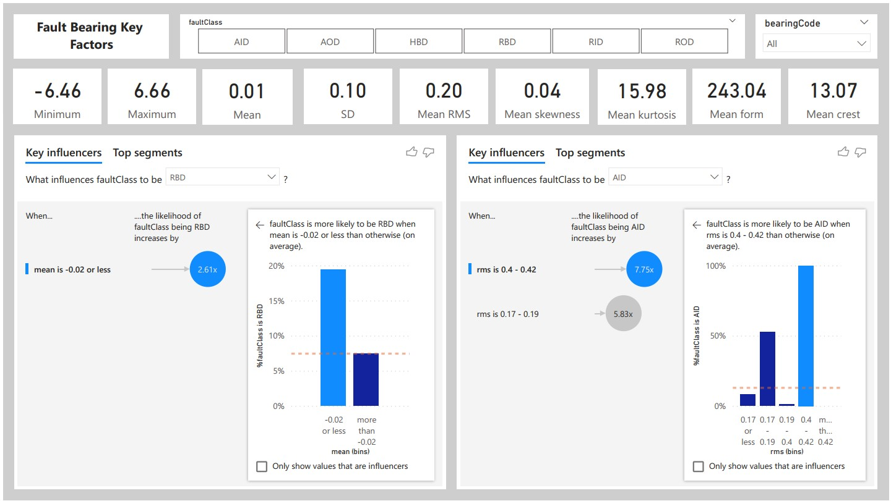
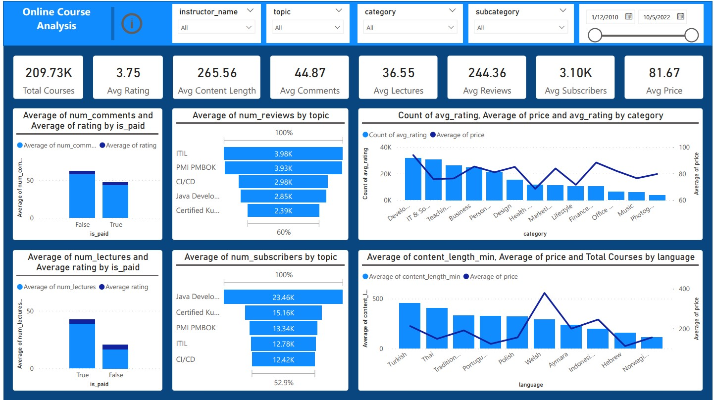
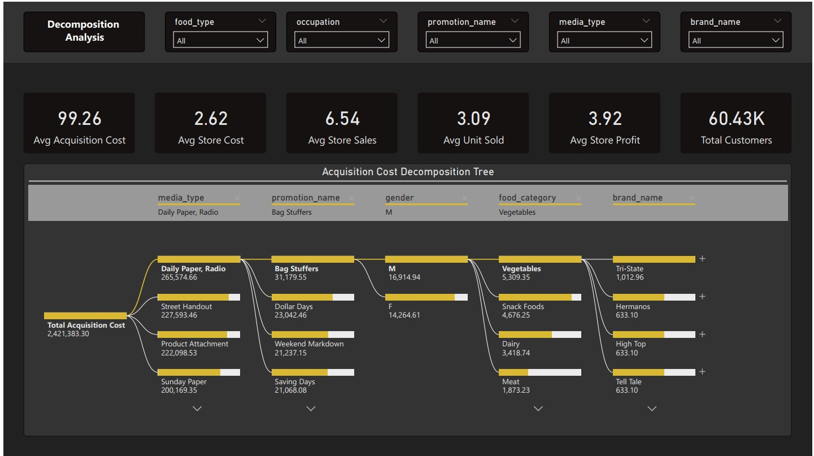
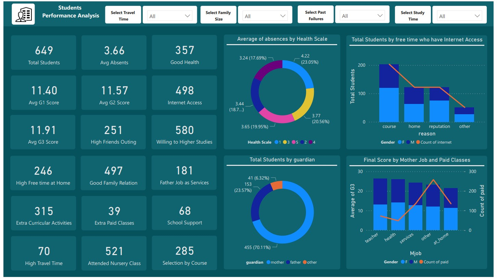
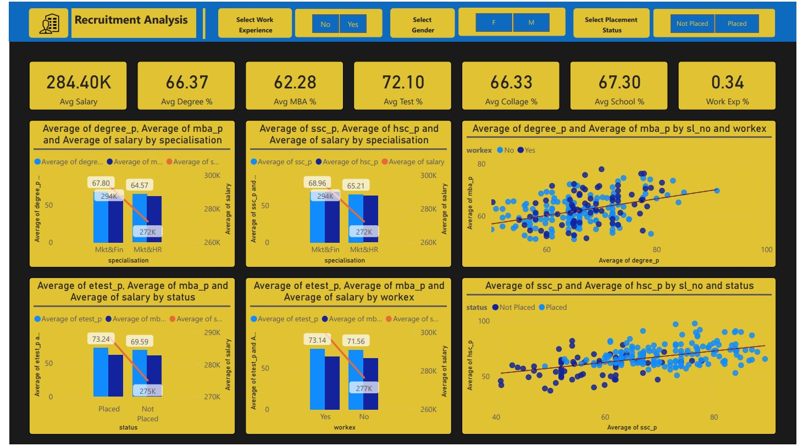
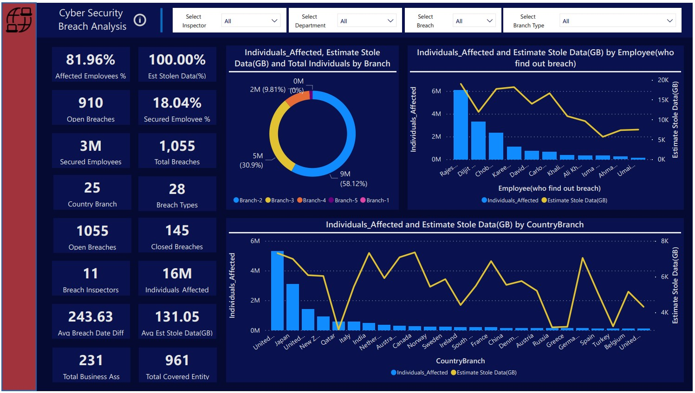
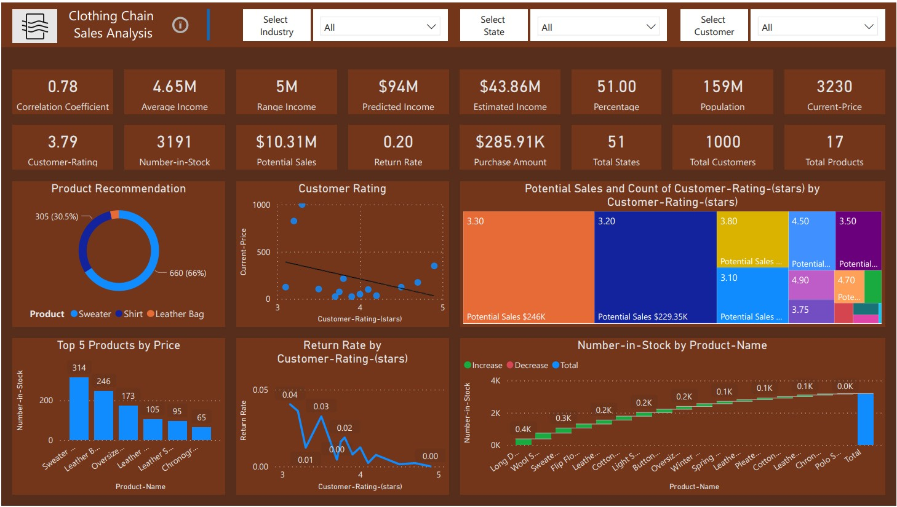
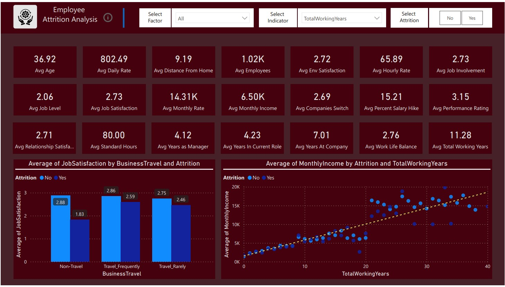

Fault Bearing Classification Analysis dashboard to explore, diagnose and highlight potential factors to predict the fault class based on bearing statistical manufacturing data. Visit Repository

The Fault-Bearing Classification Analysis Power BI Dashboard is a dynamic and interactive solution designed to empower decision-makers in industrial and maintenance settings. This dashboard focuses on the predictive maintenance of machinery by utilizing advanced classification algorithms to identify potential faults in bearings, a critical component of many industrial systems. Here's a detailed description of the key features: Real-time Fault Detection: The dashboard provides a real-time overview of bearing health, categorizing them into normal and potential fault states. Instantly identify any anomalies in the machinery. Classification Trends: Visualize trends in bearing conditions over time, allowing for proactive maintenance planning. Understand the patterns leading to faults and take preventive actions. Diagnostic Insights: Drill down into detailed diagnostic insights for each bearing, showcasing specific features contributing to fault predictions. This aids engineers and maintenance teams in targeted troubleshooting. Performance Metrics: Track performance metrics such as Precision, Recall, and F1 Score for the fault classification model. Understand the reliability and accuracy of the predictive maintenance system. Bearing Health Distribution: Utilize visualizations to showcase the distribution of bearing health across different sections of machinery. Identify high-risk areas that require immediate attention. Maintenance Cost Analysis: Evaluate the cost-effectiveness of maintenance activities by analyzing historical data on fault occurrences and associated repair costs. Optimize maintenance budgets and resource allocation. Alarm Notifications: Implement a notification system to alert stakeholders when the predictive model detects potential faults exceeding predefined thresholds. Ensure timely intervention and prevent equipment downtime. Root Cause Analysis: Dive into root cause analysis for identified faults, leveraging additional data to understand the underlying factors contributing to bearing issues. Enhance decision-making for long-term reliability improvements. User-Friendly Interface: The Power BI dashboard features a user-friendly interface with intuitive navigation, making it accessible to both technical and non-technical stakeholders. Customize views based on user roles and responsibilities. Historical Performance Comparison: Compare current fault predictions with historical data to assess the effectiveness of the predictive maintenance strategy. Identify areas of improvement and continuously refine the classification model. The Fault-Bearing Classification Analysis Power BI Dashboard is an invaluable tool for industries relying on machinery and equipment. By harnessing the power of data intelligence, this dashboard facilitates proactive decision-making, minimizes downtime, and ultimately contributes to significant cost savings through efficient and targeted maintenance practices.
Online Course Demand Analysis dashboard to highlight courses, topics and fields demands, authors courses, students feedback and rating analysis. Visit Repository

The Udemy Online Course Demand Analysis Power BI Dashboard is a comprehensive solution designed for educators, course creators, and educational institutions seeking insights into the demand and performance of online courses. This dynamic dashboard transforms raw data into actionable intelligence, providing valuable information for strategic decision-making. Here's an in-depth description of its key features: Course Enrollment Trends: Visualize enrollment trends over time, enabling stakeholders to understand the popularity of courses and identify seasonal patterns. Geographic Distribution: Explore the geographic distribution of course participants, helping target marketing efforts and optimize content for specific regions. Top Performing Courses: Highlight the top-performing courses based on enrollment numbers, ratings, and completion rates. Facilitate data-driven decisions on course development and marketing strategies. Student Demographics: Analyze the demographics of enrolled students, including age groups, genders, and educational backgrounds. Tailor courses to meet the diverse needs of the audience. Revenue and Pricing Analysis: Track revenue generated from each course and analyze the impact of pricing changes on enrollment. Optimize pricing strategies for maximum profitability. Course Completion Rates: Monitor the completion rates for each course, identifying factors that contribute to student success and areas for improvement. Instructor Performance Metrics: Evaluate the performance of instructors based on course popularity, student satisfaction, and completion rates. Support data-driven decisions in instructor management. Marketing Campaign Effectiveness: Assess the effectiveness of marketing campaigns by correlating enrollment spikes with promotional activities. Optimize marketing spend based on successful strategies. User Engagement Analytics: Dive into user engagement metrics, such as time spent on courses, to understand how learners interact with the platform. Enhance user experience and content delivery. Competitor Benchmarking: Incorporate data on competitors' course offerings and enrollment to benchmark performance and identify market opportunities. Course Category Insights: Categorize courses and analyze demand within each category. Tailor content creation and marketing efforts based on the popularity of different course genres. User-Friendly Interface: The Power BI dashboard offers a user-friendly interface with interactive visuals, making it easy for stakeholders at all levels to extract actionable insights. The Udemy Online Course Demand Analysis Power BI Dashboard is a strategic tool for anyone involved in the online education space. By leveraging data intelligence, this dashboard enables evidence-based decision-making, ultimately contributing to the growth and success of online course offerings.
Customer Acquisition Dashboard Analysis to highlight customer info, shopping and choice, feedback and market trends analysis. Visit Repository

The Customer Acquisition Cost (CAC) Analysis Power BI Dashboard is a powerful tool for marketing professionals and business stakeholders seeking to optimize their customer acquisition strategies. This dynamic dashboard transforms complex marketing data into actionable insights, providing a comprehensive view of the cost-effectiveness of acquiring new customers. Here's an elaborate description of its key features: Real-time CAC Overview: Gain an instant, real-time overview of the current Customer Acquisition Cost, allowing for quick assessments of marketing campaign effectiveness. Cohort Analysis: Visualize CAC over time for different customer cohorts, helping identify trends and fluctuations in acquisition costs for specific groups of customers. Marketing Channel Performance: Evaluate the performance of various marketing channels in terms of CAC. Identify the most cost-effective channels and optimize budget allocation accordingly. Conversion Rate Analysis: Correlate CAC with conversion rates to understand the relationship between marketing expenses and the effectiveness of converting leads into customers. Lifetime Value (LTV) Comparison: Compare CAC against Customer Lifetime Value to ensure that acquisition costs align with the potential long-term value of acquired customers. Campaign ROI Metrics: Assess the Return on Investment (ROI) for individual marketing campaigns, providing insights into which campaigns contribute most effectively to customer acquisition. Geographic CAC Variation: Explore CAC variations across different geographic regions, helping tailor marketing strategies to account for regional differences in acquisition costs. Customer Segmentation Analysis: Segment customers based on demographics or behaviors and analyze CAC within each segment. Optimize acquisition strategies for high-value customer segments. Lead Source Efficiency: Evaluate the efficiency of various lead sources in terms of CAC, assisting in refining lead generation strategies. Funnel Conversion Analysis: Visualize the customer acquisition funnel and identify potential bottlenecks or areas for improvement in the conversion process. Customer Acquisition Trends: Track trends in customer acquisition costs over time, enabling proactive adjustments to marketing strategies in response to market dynamics. User-Friendly Interface: The Power BI dashboard boasts a user-friendly interface with interactive visuals, facilitating easy exploration and interpretation of key metrics for stakeholders at all levels. The Customer Acquisition Cost Analysis Power BI Dashboard is an indispensable tool for businesses aiming to enhance the efficiency and effectiveness of their customer acquisition efforts. By leveraging data intelligence, this dashboard empowers marketing teams to make informed decisions, allocate resources judiciously, and ultimately maximize the return on their marketing investments.
Students Performance Analysis to highlight the key factors behind the student grades and explore the areas of impact. Visit Repository

The Students Performance Analysis Power BI Dashboard is a comprehensive solution designed for educational institutions and educators to gain valuable insights into student performance. This dynamic and visually appealing dashboard provides a holistic view of academic data, facilitating evidence-based decision-making to improve learning outcomes. Here's a detailed description of its key features: Overall Academic Performance: Instantly assess the overall performance of students with a visual representation of key metrics such as average grades, pass rates, and academic achievements. Subject-wise Performance: Drill down into subject-specific performance metrics, allowing educators to identify strengths and weaknesses in each subject area. Class Comparison: Compare the performance of different classes or academic groups, enabling educators to identify trends and implement targeted interventions where needed. Individual Student Profiles: Access detailed profiles for each student, including grades, attendance, and extracurricular activities. Personalize support based on individual needs. Attendance Analysis: Visualize attendance patterns and correlate them with academic performance to understand the impact of attendance on student success. Student Engagement Metrics: Assess student engagement by tracking participation in class discussions, submission of assignments, and interaction with learning materials. Exam Result Trends: Analyze trends in exam results over time, helping educators and administrators identify improvements or areas for additional support. Parental Involvement: Incorporate metrics related to parental involvement, such as participation in parent-teacher meetings, to assess the overall support system for students. Gender-based Analysis: Examine gender-based performance metrics to identify any disparities and implement strategies to ensure equitable learning outcomes. Learning Resource Utilization: Evaluate the usage of learning resources, such as textbooks or online materials, to identify trends and ensure the effectiveness of educational materials. Intervention Tracking: Monitor the effectiveness of academic interventions and support programs, ensuring that resources are allocated to initiatives with the greatest impact. User-Friendly Interface: The Power BI dashboard offers an intuitive and user-friendly interface with interactive visuals, making it accessible to educators, administrators, and other stakeholders. The Students Performance Analysis Power BI Dashboard serves as a valuable tool for educational institutions committed to providing quality education and fostering student success. By leveraging data intelligence, this dashboard empowers educators to identify trends, implement targeted interventions, and continuously improve the learning environment for all students.
Campus Recruitment Analysis to explore the academic and job performance and key factors behind the placement. Visit Repository

The Campus Recruitment Analysis Power BI Dashboard is a strategic tool designed for educational institutions and recruiters to delve into the academic and job performance of students, unraveling key factors influencing successful placements. This dynamic and insightful dashboard provides a comprehensive view of the recruitment process, empowering stakeholders to make data-driven decisions for enhanced student career outcomes. Here's an in-depth description of its key features: Placement Overview: Gain an instant overview of overall placement statistics, including the number of placed students, placement rate, and the distribution of placements across different industries. Academic Performance Impact: Correlate academic performance metrics with placement success, helping identify the influence of grades and coursework on job placement. Job Offer Distribution: Visualize the distribution of job offers across various sectors and companies, providing insights into the industries that are actively recruiting from the campus. Company-wise Recruitment Analysis: Explore the recruitment trends of individual companies, including their hiring patterns, preferred academic backgrounds, and placement success rates. Performance by Department: Assess the placement performance of different academic departments or courses, facilitating targeted interventions and improvements in specific areas. Skills Proficiency Impact: Analyze the correlation between skills proficiency, both technical and soft skills, and job placement success. Identify areas for skills development initiatives. Alumni Success Stories: Showcase success stories of alumni who have excelled in their careers post-placement, providing inspiration and insights for current students. Internship Impact: Evaluate the impact of internships on placement outcomes, identifying trends in successful placements for students with relevant internship experiences. Geographic Placement Trends: Explore the geographic distribution of placements, helping students make informed decisions about potential job locations and industries. Recruitment Season Trends: Analyze trends in recruitment seasons, identifying peak hiring periods and helping students prepare for optimal placement opportunities. Diversity and Inclusion Metrics: Assess metrics related to diversity and inclusion in the recruitment process, including the representation of different demographics among placed candidates. User-Friendly Interface: The Power BI dashboard offers an intuitive and user-friendly interface with interactive visuals, making it accessible to career counselors, academic advisors, and students. The Campus Recruitment Analysis Power BI Dashboard serves as a strategic asset for educational institutions and recruiters aiming to optimize the placement process. By leveraging data intelligence, this dashboard facilitates targeted interventions, aligns academic programs with industry needs, and empowers students to make informed decisions for successful and fulfilling career paths.
Cyber Security Breach Analysis to explore the various factors, data breaching attacks and inspector experts analysis worldwide. Visit Repository

The Cyber Security Breach Analysis Power BI Dashboard is a comprehensive solution designed for cybersecurity professionals, IT administrators, and organizational leaders seeking insights into the complex landscape of cyber threats. This dynamic and interactive dashboard provides a centralized view of various factors contributing to data breaches, showcasing worldwide cyber attacks, and offering expert analysis for informed decision-making. Here's a detailed description of its key features: Global Threat Landscape: Gain an immediate overview of the worldwide cyber threat landscape, including the number of reported breaches, affected industries, and emerging trends. Attack Vectors and Techniques: Visualize the various attack vectors and techniques used in cyber breaches, helping organizations understand the evolving tactics employed by cybercriminals. Incident Severity Analysis: Assess the severity of cyber incidents based on impact, data compromised, and potential financial losses. Prioritize incident response efforts accordingly. Industry-Specific Breach Trends: Explore industry-specific breach trends, providing valuable insights for sectors vulnerable to targeted cyber attacks. Tailor security measures based on industry risk profiles. Common Vulnerabilities: Identify common vulnerabilities exploited in cyber breaches, guiding organizations in strengthening their security posture and implementing preventive measures. Geographical Threat Heatmap: Utilize a geographical heatmap to highlight regions with the highest frequency of cyber threats, enabling organizations to allocate resources strategically. Inspector Experts' Analysis: Incorporate insights and analyses from cybersecurity experts, offering commentary on recent breaches, emerging threats, and recommended mitigation strategies. Timeline of Breaches: Visualize a chronological timeline of reported cyber breaches, allowing stakeholders to identify patterns, timelines, and potential correlations with global events. User Activity Analytics: Analyze user activity patterns to detect anomalies and potential insider threats, contributing to a proactive approach in safeguarding against internal risks. Incident Response Effectiveness: Evaluate the effectiveness of incident response efforts by analyzing response times, containment strategies, and recovery measures taken post-breach. Regulatory Compliance Metrics: Assess compliance with cybersecurity regulations and standards, providing insights into potential areas for improvement in meeting legal and industry-specific requirements. User-Friendly Interface: The Power BI dashboard offers an intuitive and user-friendly interface with interactive visuals, allowing cybersecurity professionals and organizational leaders to explore, interpret, and act on critical breach analysis data. The Cyber Security Breach Analysis Power BI Dashboard is a crucial tool for organizations looking to proactively manage cyber risks and enhance their cybersecurity resilience. By leveraging data intelligence, this dashboard enables stakeholders to stay ahead of emerging threats, implement effective mitigation strategies, and continually strengthen their defense against evolving cyber threats worldwide.
Clothing Chain Sales Analysis to analyze the sales by various factors, customer ratings and product recommendation analysis. Visit Repository

The Clothing Chain Sales and Rating Analysis Power BI Dashboard is a robust and dynamic solution designed for retail executives, merchandisers, and marketing professionals within the clothing industry. This interactive dashboard provides a comprehensive view of sales performance, customer ratings, and product recommendations, facilitating informed decision-making and strategic planning. Here's an in-depth description of its key features: Sales Overview: Instantly assess the overall sales performance with key metrics such as total revenue, units sold, and average transaction value. Understand the financial health of the clothing chain at a glance. Sales by Category and Subcategory: Drill down into sales data by clothing categories and subcategories. Identify top-performing product lines and areas for potential growth or optimization. Customer Rating Analysis: Visualize customer ratings and reviews for each product. Understand the sentiment and satisfaction levels associated with specific clothing items. Top-Rated Products: Showcase top-rated products based on customer reviews. Highlight items that resonate positively with customers to inform marketing and merchandising strategies. Sales Trends Over Time: Analyze sales trends over time, including daily, weekly, and monthly patterns. Identify seasonal fluctuations and plan inventory and marketing campaigns accordingly. Customer Segmentation: Segment customers based on purchasing behavior, allowing for targeted marketing strategies and personalized recommendations. Product Recommendation Engine: Implement a product recommendation engine based on customer preferences and historical data, enhancing the customer shopping experience and maximizing cross-selling opportunities. Geographic Sales Distribution: Explore sales distribution across different regions, helping optimize inventory based on regional demand and preferences. Discount and Promotion Impact: Evaluate the impact of discounts and promotions on sales. Understand which promotions drive customer engagement and increase conversion rates. Return and Exchange Analysis: Analyze return and exchange rates for different products. Identify potential quality issues or areas for improvement in product descriptions. Inventory Turnover: Monitor inventory turnover rates to optimize stock levels and reduce holding costs. Ensure that popular items are well-stocked to meet customer demand. User-Friendly Interface: The Power BI dashboard offers an intuitive and user-friendly interface with interactive visuals, making it accessible to retail professionals, merchandisers, and other stakeholders. The Clothing Chain Sales and Rating Analysis Power BI Dashboard is an indispensable tool for clothing retailers seeking to optimize sales, enhance customer satisfaction, and make data-driven decisions. By leveraging data intelligence, this dashboard provides actionable insights for improving product offerings, tailoring marketing strategies, and staying competitive in the dynamic fashion retail industry.
Employee Attrition Analysis to diagnose the employee personal satisfaction key factors. Visit Repository

Employee Attrition Analysis Power BI Dashboard The Employee Attrition Analysis Power BI Dashboard is a strategic tool designed for human resources professionals, organizational leaders, and managers to gain valuable insights into the factors influencing employee turnover. This dynamic and interactive dashboard offers a comprehensive view of employee satisfaction and key drivers contributing to attrition, facilitating informed decision-making for talent retention strategies. Here's a detailed description of its key features: Attrition Overview: Gain an immediate overview of employee attrition rates, providing insight into the current state of workforce stability. Attrition Trends Over Time: Analyze attrition trends over specific time periods, helping identify seasonal patterns or significant events influencing employee turnover. Departmental Attrition Rates: Drill down into attrition rates by departments or teams, facilitating targeted interventions and department-specific retention strategies. Demographic Breakdown: Explore attrition trends based on demographic factors such as age, gender, and tenure. Identify areas of concern and opportunities for improvement in specific employee segments. Satisfaction Surveys Analysis: Incorporate results from employee satisfaction surveys, providing a detailed understanding of the factors contributing to employee discontent. Job Satisfaction Metrics: Assess job satisfaction metrics, including factors such as workload, work-life balance, career growth opportunities, and relationships with colleagues. Compensation and Benefits Impact: Analyze the impact of compensation and benefits on attrition rates. Identify areas for adjustment to ensure competitiveness in the job market. Managerial Effectiveness: Evaluate the effectiveness of managers in retaining their teams. Identify managers with higher attrition rates and areas for leadership development. Training and Development Opportunities: Showcase the correlation between attrition rates and the availability of training and development programs. Identify gaps and opportunities for upskilling. Exit Interview Analysis: Incorporate insights from exit interviews, providing firsthand accounts of the reasons behind employee departures. Employee Engagement Scores: Monitor employee engagement scores, identifying any correlation between engagement levels and attrition rates. Predictive Analytics for Attrition Risk: Utilize predictive analytics to identify employees at risk of attrition based on historical data and key indicators. Implement targeted retention strategies for high-risk employees. User-Friendly Interface: The Power BI dashboard offers an intuitive and user-friendly interface with interactive visuals, allowing HR professionals, managers, and organizational leaders to explore, interpret, and act on critical employee attrition data. The Employee Attrition Analysis Power BI Dashboard is an indispensable tool for organizations committed to retaining top talent and creating a positive work environment. By leveraging data intelligence, this dashboard enables stakeholders to pinpoint areas for improvement, implement targeted retention initiatives, and foster a workplace culture that supports employee satisfaction and long-term commitment.